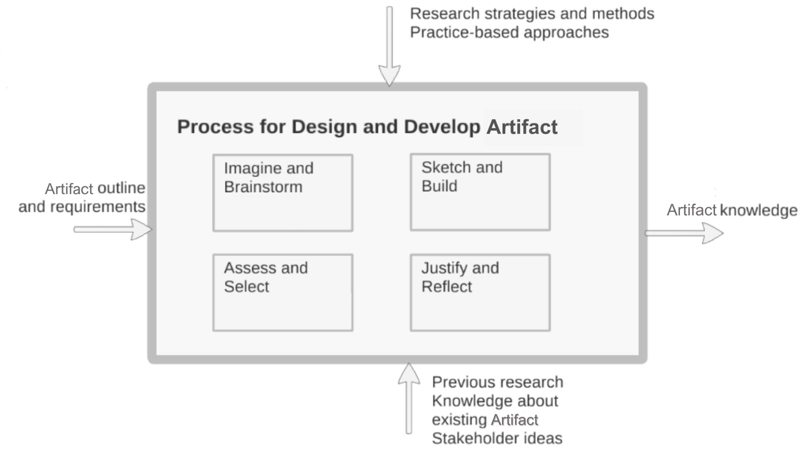

Scientific skills: Research Methodology - Design Science Research
Prabudh Mishra
Sumitkumar Ramnikbhai Sapoliya
Professur Verteilte und Selbstorganisierende Rechnersysteme
Technische Universität Chemnitz
Chemnitz, Deutschland
1. Introduction
Edited by Sumitkumar Sapoliya
Design Science Research (DSR) is a research methodology that focuses on
the creation and evaluation of innovative artifacts to address practical
problems. It involves the systematic application of scientific and
design principles to develop solutions that are both practical and
contribute to theoretical knowledge in a particular domain
[1].
DSR aims to bridge the gap between theory and practice by providing a
structured approach to solving complex problems. Unlike traditional
research approaches that primarily focus on understanding phenomena, DSR
emphasizes the creation of artifacts as a means of advancing knowledge.
An artifact is an object made by humans with the intention that has been
used to address a practical problem. These artifacts serve as innovative
ideas and solutions for the problem. They provide a practical and
meaningful impact on the solution by testing and implementing it in
real-world scenarios [1].
These artifacts contribute to the advancement of scientific knowledge as
they provide relevant data required by the researchers on a certain
topic that is tested and trusted, hence making the research process
quick and enhancing the existing knowledge of the topic
[1].
2. Objectives of Design Science Research
Edited by Sumitkumar Sapoliya
The objectives of DSR can be summarized as follows:
Develop Innovative Solutions: It aims to create and
demonstrate novel artifacts, such as models, methods, or tools, that
provide practical solutions to real-world problems. These artifacts are
designed based on identified requirements and design principles to
address specific issues or improve existing practices
[2].
Problem Relevance:
DSR focuses on addressing practical problems and challenges faced in
real-world contexts. The research aims to create solutions that have a
meaningful impact on individuals, organizations, or society.
Enhance Understanding: In addition to developing
solutions, Design Science Research also contributes to enhancing the
existing knowledge in a particular field. It seeks to expand the
understanding and insights related to the problem domain
[1].
Rigorous Evaluation: DSR emphasizes the rigorous
evaluation of artifacts to assess their effectiveness, efficiency, and
utility. Evaluation methods can vary depending on the nature of the
artifact and the research context. Design Science Research emphasizes
the evaluation and validation of the design artifacts created. It
ensures that the proposed solutions are effective, reliable, and aligned
with the desired objectives [2].
Contribute to knowledege: DSR aims to contribute to
knowledge by advancing theoretical understanding in a specific domain.
Through the development and evaluation of artifacts, DSR seeks to
improve existing theories or create new ones that explain and support
the designed solutions. By doing so, DSR enhances the theoretical
foundations of the domain and contributes to the broader academic
community [3].
3. Areas of Interest
Edited by Sumitkumar Sapoliya
Design Science Research finds applications in various research areas
within computer science fields like Software engineering, Information
systems, Manufacturing, and other prominent fields like Healthcare,
Business, and management.
DSR plays a crucial role in Software Engineering by developing novel
methodologies for software development, designing efficient software
architectures, creating new programming languages, and improving
software testing and maintenance processes. By applying DSR, researchers
can improve the quality, reliability, and efficiency of software
systems, benefiting both developers and end-users [1].
In the area of Information systems, DSR focuses on enhancing user
interfaces, designing innovative systems, developing new methods for
data analysis, and improving decision support systems. By applying DSR
principles, researchers can develop cutting-edge technologies that
improve how organizations handle data and make accurate decisions
[5].
DSR also contributes to manufacturing by designing new engineering
processes, developing innovative manufacturing technologies, optimizing
product design, and improving production systems [3].
DSR even has a significant impact on healthcare by designing innovative
healthcare delivery systems, developing new medical devices or
technologies, improving patient information systems, and optimizing
healthcare processes [6].
In the field of business and management, DSR focuses on designing new
business models, optimizing organizational processes and structures,
developing decision support tools for strategic planning, and enhancing
supply chain management systems. Through DSR, researchers can create
innovative solutions that drive organizational growth, improve
efficiency, and enable better decision-making.
4. Design Science Research Process
Edited by Sumitkumar Sapoliya
The DSR methodology consists of a systematic framework that guides
researchers through a series of activities. These activities provide an
organized approach to problem-solving and artifact development. The key
activities in the DSR framework include explicating the problem,
defining requirements, designing and developing the artifact,
demonstrating the artifact, and evaluating the artifact.
4.1. Explicate Problem
Problem explication is a critical activity in DSR that aims to precisely
define and justify a problem within a specific practice. This section
offers a detailed understanding of problem explication and its
importance in the DSR process by diving into three sub-activities.
The first sub-activity focuses on expressing the problem in a precise
manner. It is essential to ensure that different stakeholders have a
shared understanding of the problem, enabling effective collaboration. A
more precise problem definition reduces ambiguity, enabling stakeholders
to work together towards a common goal. Furthermore, precise problem
definitions make issues more manageable and facilitate the development
of innovative solutions. However, the goal is to achieve a balance, as
overly precise definitions may miss the intended target and restrict
creative problem-solving.
The second sub-activity involves placing the problem in its context and
highlighting its significance. Researchers consider the practice,
stakeholders, environment, and negative consequences of not addressing
the problem. This analysis helps justify the problem's importance based
on stakeholder relevance, general interest, challenge, and originality.
The problem should be important to stakeholders, have broader relevance
beyond individual contexts, present a challenge without existing
solutions, and ideally be an original problem that has not been raised
before.
The third sub-activity involves identifying and understanding the
underlying causes or root causes of the problem. It is a systematic
approach that moves from symptoms to uncovering the fundamental causes
of the problem. It enables researchers to address the underlying causes,
leading to effective problem-solving.
Problem explication is a crucial activity in the DSR process, ensuring a
clear and precise understanding of the problem at hand
[5].
The activity of defining requirements is a crucial step in the DSR
methodology, aiming to outline an artifact that can effectively address
the explicated problem. This activity delves into the process of
defining requirements, like understanding the problem, identifying
stakeholder requirements, and outlining the artifact.
Outlining the artifact involves making decisions about its type and
description. Researchers choose the most suitable form of the artifact,
such as constructs, models, methods, or instantiations, based on the
problem, resources, and expected outcomes. The outline provides an
initial understanding of the artifact's purpose, functionality, and
design considerations.
Eliciting requirements involves identifying and gathering desired
properties and features from stakeholders for the artifact. There are
two types of requirements: functional and non-functional. Functional
requirements specify the artifact's specific functionalities and
capabilities that address the problem. Non-functional requirements focus
on quality attributes like usability, performance, and security.
Eliciting requirements requires stakeholder engagement, interviews,
surveys, and analysis of existing practices. Accurate documentation of
all relevant requirements is essential [5].
The activity of designing and developing an artifact plays a crucial
role in the DSR process. This section offers a comprehensive
understanding of artifact design and development in DSR by exploring
sub-activities.
The sub-activity of imagine and brainstorm focuses on generating
creative ideas and exploring potential solutions. Researchers engage in
open and collaborative brainstorming sessions to foster innovation. By
encouraging diverse perspectives and creative thinking, researchers can
envision a wide range of possibilities to address the identified
problem. This phase sets the foundation for generating innovative ideas
that can lead to effective artifact design.
Researchers conduct a systematic evaluation of promising ideas,
considering feasibility, practicality, and potential impact. They
identify the most promising ideas for further development, addressing
the problem effectively.
In the sketch and build sub-activity, researchers transform selected
ideas into tangible representations and prototypes. Sketching involves
creating visual representations, diagrams, or mock-ups that illustrate
the design and functionality of the artifact. Building focuses on
constructing prototypes or developing software systems based on the
chosen design. This sub-activity bridges the gap between abstract
concepts and tangible artifacts, allowing researchers to iteratively
refine and improve the artifact's design.
The justify and reflect sub-activity evaluates artifacts for effective
problem-solving by analyzing functionality, usability, efficiency, and
alignment with defined requirements. Researchers compare and contrast
artifacts based on predefined criteria, ensuring alignment with
stakeholder needs and potential for problem-solving
[5].

Figure 3: Design and development of Artifact
[5].
4.4. Demonstrate Artefact
Once the artifact is designed and developed, the next activity in the
DSR method framework is demonstrating its functionality and usability.
This activity involves showcasing the artifact to stakeholders and
obtaining feedback on its effectiveness in addressing the problem. >
The first sub-activity involves selecting or designing a case upon which
the artifact will be applied and tested. The case can be a real-life
scenario, a case from existing literature, or a fictitious case
specifically designed for demonstration purposes. Real-life cases
provide practical context, while fictitious cases offer the advantage of
designing extreme conditions to showcase the viability and effectiveness
of the artifact. Careful consideration is given to selecting a
representative case for evaluating the artifact's capabilities.
The second sub-activity focuses on applying the artifact to the chosen
case and documenting the outcomes. Researchers use domain-specific
knowledge to apply the artifact effectively. They evaluate how well the
artifact addresses the problem within the case and document the results.
The outcomes may include process improvements, better decision-making,
or other positive impacts. This sub-activity validates the artifact's
effectiveness in addressing the problem [5].
The activity of evaluating an artifact in DSR is essential to assess its
effectiveness in solving the explicated problem and fulfilling the
defined requirements.
The first sub-activity involves analyzing the evaluation context to
establish a basis for selecting appropriate goals and strategies.
Researchers consider the constraints within the evaluation environment,
such as available time, resources (people, budget), and access to users
or organizations. Understanding the context helps researchers make
informed decisions regarding the evaluation goals and strategies that
align with the available resources and constraints.
The second sub-activity involves selecting evaluation goals and
strategies, focusing on specific requirements, contextual knowledge,
comparisons, side effects, and formative or summative evaluations.
Researchers must consider factors like effectiveness, resources, time,
and budget to select appropriate research strategies and methods.
The final sub-activity focuses on designing and conducting the
evaluation process, including setting up a laboratory, designing
interview questions, selecting software, and ensuring compliance with
research strategies and methods. Researchers execute the evaluation,
applying the artifact, collecting data, analyzing results, and
documenting outcomes.
DSR aims to evaluate artifact development by solving the explicated
problem and fulfilling defined requirements. By analyzing the evaluation
context, selecting appropriate goals, and conducting assessments,
researchers gain insights into the artifact's performance and
effectiveness, contributing to the advancement of knowledge in the
field.
The results of a design science project are typically communicated to
researchers as well as to practitioner communities, which may include
both technology-oriented and management-oriented audiences.Communicating
results to researchers requires attention to rigor so that they can
evaluate the results and build on them in future work
[5].
Rigor or Research Rigor in DSR refers to the quality and strength of the
artifacts like research findings and processes. Rigor ensures that the
research is conducted diligently and reliably, generating a sense of
trust in the results. [1]
Rigor is essential in DSR for the following reasons:
Validity: Rigor is essential for establishing the
validity of the research. Validity ensures that the research accurately
measures the intended aspects and that the findings are dependable and
trustworthy. [1]
Credibility: Rigorous research methods enhance the
credibility of the research findings. By employing systematic
approaches, researchers demonstrate that their work is based on sound
principles and can withstand scrutiny. [3]
Generalizability: Thorough research improves the
finding’s generalizability beyond the specific context of the study. It
enables the application and adaptation of research artifacts and
solutions to various contexts and scenarios.
[4]
Replicability: Rigorous research promotes
replicability, meaning that other researchers can repeat the study using
the same methods and data to validate or build upon the findings.
Replicability strengthens confidence in the research outcomes.
[4]
Theory Building: Rigorous DSR contributes to theory
building in the field. By employing rigorous methods, researchers
generate reliable and consistent empirical evidence that can support the
development or refinement of theories and frameworks.
[5]
6. Challenges and Limitations in DSR
Edited by Pabudh Mishra
While DSR offers several advantages, such as its focus on practical
solutions and its iterative nature, it also faces certain challenges and
limitations.
Lack of a standardized research process: Design Science
Research lacks a universally accepted step-by-step research process,
leading to variability and inconsistency in its execution and reporting
[1].
Difficulty in evaluating artifact quality: Assessing
the quality of Design Science Research artifacts can be subjective and
context-dependent, lacking well-defined criteria and guidelines for
evaluation [1].
Limited generalizability: Design Science Research
primarily focuses on specific problem situations within particular
organizational or domain contexts, limiting the generalizability and
applicability of its outcomes [2].
Limited emphasis on theory development: Design Science
Research tends to prioritize the creation of practical artifacts,
potentially resulting in a limited emphasis on theoretical contributions
[2].
Challenges in conducting rigorous evaluation: The
iterative nature of Design Science Research makes it challenging to
establish causality and isolate the effects of specific artifact
features or interventions, necessitating the development of rigorous
evaluation methodologies and metrics [3].
Publication biases and recognition: Design Science
Research studies may face publication biases and limited recognition
within traditional research outlets, potentially hindering the
dissemination and acknowledgment of its contributions
[1].
7. Demonstration
Edited by Prabudh Mishra
For the sake of demonstration, we had taken this scenario for a Customer
Resource management (CRM) application: “During the recent financial
years, it has been found that there was a lack of effective lead
management and conversion tracking, leading to suboptimal sales
performance and difficulty in identifying high-potential leads. Despite
continuous training in sales management and data management, issues were
still not getting resolved”.
In the previous version, the developers used “waterfall” approaches
where requirements were defined and validated before starting
implementation and not changed until a version is completed and
distributed to clients.
Let’s break down the whole process in DSR’s process flow:
Explicate problem: After explicating the problem in the
current version of the CRM application, it can be seen that there is
inefficient customer data management and a lack of effective
communication channels.
Define requirements: From the explicated problem, we
created requirements to streamline customer data management, improve
customer engagement and enhance the communication between customers and
sales representatives.
Design and Develop artifacts: From the requirements
obtained, we can create artifacts like Constructs, Models, and
Activities that would make up the whole project and resolve the issues
one by one. UI/UX design could be created as constructs, System
architecture diagrams, and Wireframes as Models and combined with a
working prototype as Actions that make up these artifacts.
Demonstrate artifacts: After the artifacts have been
developed, we need to show them to the stakeholders. Now these artifacts
could be demonstrated to stakeholders using the methods like User
testing, Performance evaluation, Case studies, and comparison with other
current CRM applications on the market for validation.
Evaluate artifacts: After demonstrating the artifacts
to the stakeholders, the artifacts will be tested on their usability by
taking feedback from the users gathered during the demonstration phase,
checking whether it has completed most of its objective of customer
management and communication, and calculating the total impact on
customer satisfaction. This whole determines its performance which is
higher than its previous version as all the issues were solved before
reaching to this phase.
Figure 6: DSR Process flow for CRM application
After completing all the phases, we can see that the performance and
usability of the CRM application went up by more than 20% as there was a
proper flow of customer traffic data and they got assistance in managing
their dashboards with the help of the sales representatives.
8. Classical Methodologies
Edited by Prabudh Mishra
There are other research techniques or methodologies other than DSR,
which are used even before DSR was created and are still used to date.
These methodologies are considered Classic research methodologies. These
methodologies include Quantitative and qualitative research, Action
research, Participatory design, and Case studies.
These classic methodologies are used to understand the working of the
topic and discover new knowledge regarding that topic. They are useful
depending on the research questions and context as they are completely
theoretical in nature.
8.1 DSR v/s Classical Methodologies
Both DSR and Classical methodologies are used for research purposes.
There are many similarities in these methodologies, but their difference
is what separates them and makes them useful for certain cases.
Firstly, DSR focuses on contributing directly to practice by creating
artifacts that can be used in real-world contexts, while these classic
methodologies contribute to theoretical knowledge. [1]
Secondly, the main objective of DSR is to create innovative solutions to
real-world problems, while the objective of classic methodologies is to
understand the working of that topic. [1]
Thirdly, DSR is an iterative process that involves creating, testing,
and refining artifacts in an ongoing cycle. Classic methodologies tend
to be more linear in nature.
Fourthly, Both DSR and classic methodologies require rigor in research
methods and techniques. However, DSR also emphasizes the rigor of the
design process and the testing of artifacts in real-world contexts.
[3]
Finally, DSR uses specific evaluation criteria to assess the utility,
quality, and effectiveness of the artifact. These criteria are often
derived from established theories, best practices, or expert opinions,
while classical methodologies typically rely on validity, reliability,
and generalizability as key evaluation criteria. [3]
9. Future of Design Science Research
Edited by Prabudh Mishra
DSR opens up avenues for future exploration and improvement. Here are
some potential areas for further research and development:
Enhancing artifact Effectiveness: Investigate ways to
further enhance the effectiveness and impact of design artifacts. This
may involve refining existing artifacts, exploring new design
approaches, or incorporating emerging technologies.
Addressing Evolving Challenges: Explore how DSR can
adapt to address evolving challenges in the information systems
landscape, such as cybersecurity, data privacy, or ethical
considerations in technology design. [3]
Collaboration with Industry: Foster stronger
collaborations between academia and industry to ensure the practical
relevance and implementation of design artifacts. This can involve joint
research projects, industry partnerships, or technology transfer
initiatives. [2]
Human-Centered Design: Emphasize human-centered design
approaches in DSR by placing users at the center of artifact
development. Investigate user needs, preferences, and experiences to
create artifacts that better align with user expectations.
[3]
Evaluation Methodologies: Develop and refine evaluation
methodologies specific to DSR. Explore new approaches, metrics, and
frameworks to assess the impact and value of design artifacts in
real-world settings. [1]
Ethical Considerations: Examine the ethical
implications of design artifacts and methodologies in DSR. Investigate
ethical frameworks, guidelines, and best practices to ensure responsible
and ethically sound design practices. [3]
10. Conclusion
Edited by Prabudh Mishra
Design Science Research is a powerful methodology that offers many
benefits for researchers, practitioners, and stakeholders, by creating
and evaluating innovative solutions for real-world problems. Using this
methodology, we can generate new knowledge that can be used to improve
the effectiveness and efficiency of organizations. While there are
challenges associated with Design Science Research, these can be
overcome through careful planning, collaboration, and communication.
Overall, Design Science Research is an important and valuable approach
that can help to drive innovation and progress in a range of fields.
11. References
[1] Hevner, A. R., March, S. T., Park, J., & Ram, S. (2004). “Design
science in information systems research.” MIS Quarterly, 28(1), 75-105.
https://www.jstor.org/stable/25148625
[Accessed: 25-June-2023].
[2] Peffers, K., Tuunanen, T., Rothenberger, M. A., & Chatterjee, S.
(2007). “A design science research methodology for information systems
research.” Journal of Management Information Systems, 24(3), 45-77.
https://www.jstor.org/stable/40398896
[Accessed: 10-June-2023].
[3] Gregor, S., & Hevner, A. R. (2013). “Positioning and Presenting
Design Science Research for Maximum Impact.” MIS Quarterly, 37(2),
337–355.
http://www.jstor.org/stable/43825912
[Accessed: 25-June-2023].